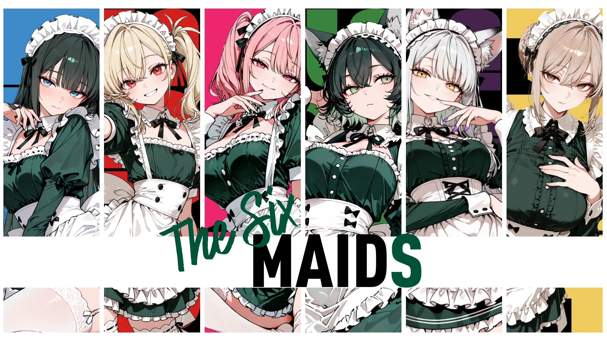

05 / STORYFRAGMENTS OF THE WORLD
STORY
物語は、ひとつの場所にはない。
6人のメイド達が暮らす、とある王国。
何気ない日常、不可解な事件、隠された過去。
彼女達の物語は、会話や記録、日記、そして映像の中に断片として残されている。
どこから触れるか、何を知るか。
その順番さえ、あなたの自由。
散らばった断片を拾い集めたとき、きっと世界の見え方が変わる。
WELCOME IN.
物語を読む
6人のメイド、６人の色、６人の音色。
彼女達の世界。
6人のメイド達を中心とする、オリジナルファンタジー世界。
キャラクターの個性と物語をアニメーション、音楽、アートワーク、小説…そしてAIキャラクターで様々な媒体を跨いで表現する世界。
世界を描く。個性をかたちにする。
キービジュアルから、デザインの細部まで。
6人のメイド達が暮らす、とある王国。
何気ない日常、不可解な事件、隠された過去。
彼女達の物語は、会話や記録、日記、そして映像の中に断片として残されている。
どこから触れるか、何を知るか。
その順番さえ、あなたの自由。
散らばった断片を拾い集めたとき、きっと世界の見え方が変わる。
WELCOME IN.
物語を読むイラスト、映像、音楽、物語、そしてキャラクター達との会話。
STUDIO GUINNESSの作品は、さまざまなプラットフォームに散らばっている。
WELCOME TO THE CREATIVE JUNKYARD.
オリジナルキャラクターと世界観を中心に、映像、音楽、イラスト、物語を横断して制作しています。
AIを制作ツールとして活用しながら、編集、構成、演出、グラフィックデザインを組み合わせ、新しい表現方法を探求しています。
Art Direction / Fashion Converter
ファッション・アニメ・ゲーム関連のアパレルOEM/ODMを本業とするジャンク屋。
衣服の構造やデザインに携わる一方、AIを活用したキャラクター制作、映像演出、音楽制作、グラフィックデザインなど、ジャンルを横断した創作活動を展開しています。
自分ができないことはAIで。
AIができないことは自分で。
技術やジャンルにとらわれず、思いついたアイデアを形にすることを楽しんでいます。
WELCOME TO THE
CREATIVE JUNKYARD